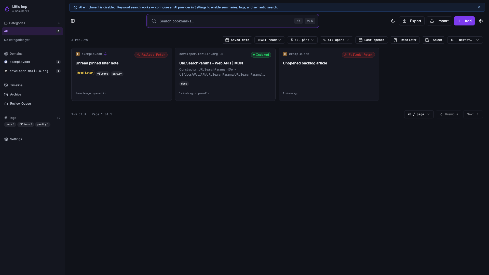
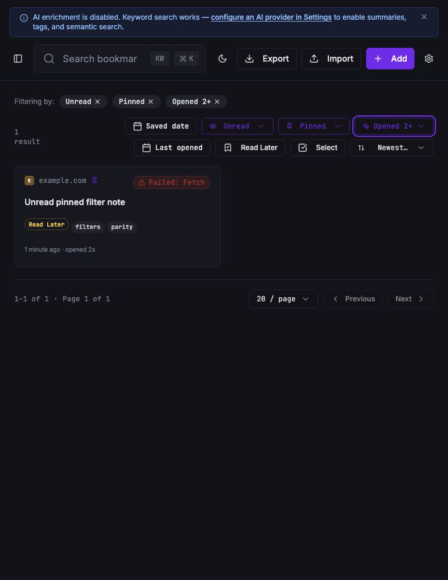
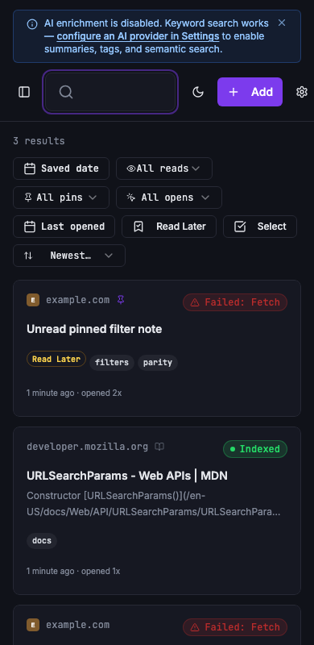

Little Imp Task Report
Library Parity Filters

Before
The library could filter by category, tag, domain, created date, and read-later state. Read/unread, pinned/starred, opened-count, and last-opened filters were not available server-side, so they could not safely combine with daemon pagination.
Problem
Grimoire parity requires these bookmark metadata filters to apply before pagination across both normal list and search results. Client-only filtering would produce incorrect page totals and incomplete filtered pages.
Changes Added
- Added validated query params for
read_state,is_pinned,opened_count_min,opened_count_max,last_opened_from, andlast_opened_to. - Applied the shared predicates in bookmark listing, keyword search, semantic search, hybrid search, and filtered export paths.
- Added compact toolbar controls and active filter chips for read state, pinned state, opened count, and last-opened date.
- Regenerated API docs and added SQLite indexes for the existing parity fields used by these filters.
Result
Users can combine the new filters with existing search, category, tag, domain, date, read-later, page-size, and pagination controls. The daemon owns the result set, so counts, pages, and filtered exports stay coherent.
Verification
bun test daemon/src/test/integration/bookmarks.test.ts daemon/src/test/integration/search.test.tsnpx vitest run src/lib/api.test.ts src/lib/export-url.test.ts src/hooks/use-bookmarks.test.ts src/pages/Index.test.tsxbun test daemon/src/test/migrations.test.tsnpm run checknpm run test:e2egit diff --check- In-app browser visual check on an isolated daemon at
127.0.0.1:33216and Vite at127.0.0.1:8081.
Additional Screenshots


Files Changed
daemon/src/db/bookmark-filters.tsdaemon/src/db/migrations/0016_bookmark_parity_filter_indexes.sqldaemon/src/routes/bookmark-filter-query.tsdaemon/src/db/bookmark-repository.tsdaemon/src/db/search-repository.tsdaemon/src/routes/bookmarks.tsdaemon/src/routes/search.tsdaemon/src/routes/export.tssrc/lib/api.tssrc/lib/export-url.tssrc/hooks/use-bookmarks.tssrc/pages/Index.tsxAPI.mdand generated contract files